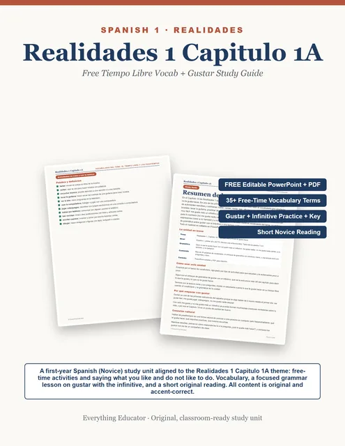

Free file
Realidades 1 Capitulo 1A FREE Study Guide
This is a FREE first-year Spanish study unit for Realidades 1 Capitulo 1A, the free-time chapter where students learn to say what they like and do not like to do.

What is in the file
This is a FREE first-year Spanish study unit for Realidades 1 Capitulo 1A, the free-time chapter where students learn to say what they like and do not like to do. It is calibrated for Novice learners (Spanish 1) and gives you the theme vocabulary, a focused grammar lesson on using gustar with an infinitive, and a short, simple original reading with comprehension questions, in both an editable PowerPoint and a print ready PDF.What is included:• A study unit overview that frames the Capitulo 1A theme: free-time activities and likes and dislikes• A vocabulary bank of more than thirty-five high frequency free-time terms (bailar, cantar, nadar, dibujar, jugar videojuegos, montar en bicicleta, tocar la guitarra, and many more), grouped by type with clear, simple Spanish glosses• A grammar focus on saying what you like to do with me gusta plus an infinitive, including no me gusta nada, a mi tambien, a mi tampoco, ni... ni, and the question que te gusta hacer, with worked models, eight guided practice items, and a full answer key• A short, simple Novice reading in which a student introduces what they like and do not like to do, with five comprehension questions and an answer key• A short writing extension where students answer in Spanish about their own free time• An editable PowerPoint where students type their answers and teachers annotate in the deck, plus a print ready PDFEvery example and reading is original, accent-correct, and written at a true first-year level. Perfect for the start of Spanish 1, a Realidades 1A companion, a vocabulary and gustar review day, sub plans, or independent practice. Loved this? The full Realidades 1 vocab and grammar study-unit series is in my store.This is a FREE first-year Spanish study unit for Realidades 1 Capitulo 1A, the free-time chapter where students learn to say what they like and do not like to do. It is calibrated for Novice learners (Spanish 1) and gives you the theme vocabulary, a focused grammar lesson on using gustar with an infinitive, and a short, simple original reading with comprehension questions, in both an editable PowerPoint and a print ready PDF.What is included:• A study unit overview that frames the Capitulo 1A theme: free-time activities and likes and dislikes• A vocabulary bank of more than thirty-five high frequency free-time terms (bailar, cantar, nadar, dibujar, jugar videojuegos, montar en bicicleta, tocar la guitarra, and many more), grouped by type with clear, simple Spanish glosses• A grammar focus on saying what you like to do with me gusta plus an infinitive, including no me gusta nada, a mi tambien, a mi tampoco, ni... ni, and the question que te gusta hacer, with worked models, eight guided practice items, and a full answer key• A short, simple Novice reading in which a student introduces what they like and do not like to do, with five comprehension questions and an answer key• A short writing extension where students answer in Spanish about their own free time• An editable PowerPoint where students type their answers and teachers annotate in the deck, plus a print ready PDFEvery example and reading is original, accent-correct, and written at a true first-year level. Perfect for the start of Spanish 1, a Realidades 1A companion, a vocabulary and gustar review day, sub plans, or independent practice. Loved this? The full Realidades 1 vocab and grammar study-unit series is in my store.
No email, no catch
Every free file here is the same file we use in our own classrooms. The download is the whole transaction. If it earns a spot in your room, a quick review on the listing helps other teachers find it, and following the store means you hear about the next one first.